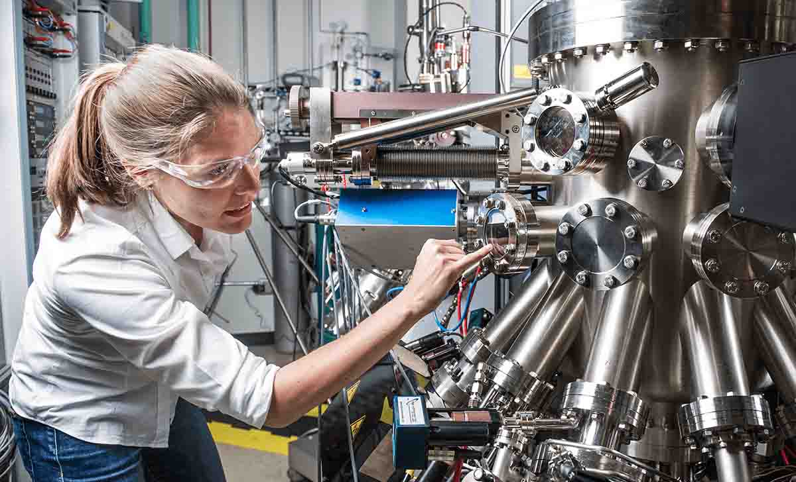

La calidad es el grado en que un producto cumple los requisitos y las especificaciones establecidas, así como las necesidades y expectativas del cliente. En una empresa manufacturera, implica fabricar productos que cumplan con las dimensiones, los materiales, la resistencia y las características definidas para su uso.
La gestión de la calidad comprende las actividades destinadas a planificar, controlar y mejorar los procesos para obtener resultados consistentes. En una fábrica de productos plásticos, permite verificar que los recipientes, envases y demás piezas fabricadas cumplan las especificaciones técnicas, evitando desperdicios, reprocesos y reclamaciones de los clientes.
El control de calidad consiste en verificar que los productos y los procesos cumplan los requisitos establecidos. Para ello, se realizan inspecciones, mediciones y pruebas que permiten detectar desviaciones y determinar si un producto puede ser aceptado o necesita una corrección.
La inspección consiste en examinar un producto o proceso para comprobar si cumple las especificaciones. Puede incluir la medición de dimensiones, la revisión de acabados y la identificación de daños visibles. Por ejemplo, un inspector puede verificar que una pieza plástica tenga las dimensiones correctas y no presente grietas.
La prevención busca evitar que los defectos ocurran, en lugar de limitarse a detectarlos cuando el producto ya está fabricado. Para lograrlo, se pueden estandarizar los procedimientos, capacitar a los operarios, controlar los parámetros de las máquinas y verificar las condiciones de las materias primas.
La mejora continua consiste en analizar los resultados de los procesos e implementar cambios que permitan mejorar progresivamente su desempeño. Por ejemplo, si una fábrica detecta que muchas piezas presentan deformaciones, puede investigar sus causas, ajustar las condiciones de fabricación y comprobar si las modificaciones reducen los defectos.
El diagrama de Pareto es una herramienta gráfica que organiza los problemas según su frecuencia o impacto, de mayor a menor. Ayuda a identificar cuáles situaciones deben atenderse primero para obtener mejores resultados con los recursos disponibles.
Ejemplo: una fábrica registra defectos como grietas, deformaciones, rebabas y variaciones de color. Si las deformaciones representan la mayor proporción de los defectos registrados, la empresa puede priorizar su investigación y aplicar acciones para reducirlas.
El diagrama de Ishikawa, también conocido como diagrama de causa y efecto o espina de pescado, permite organizar las posibles causas de un problema. Estas pueden relacionarse con las máquinas, los materiales, los métodos de trabajo, el personal o las condiciones del entorno.
Ejemplo: si una máquina produce piezas plásticas deformadas, el equipo de trabajo puede investigar si el problema está relacionado con la temperatura, el molde, la materia prima o los parámetros de operación.
Las listas de verificación son formatos que permiten registrar de manera ordenada los controles que deben realizarse durante una inspección. Facilitan la recolección de datos y ayudan a evitar que se omitan actividades importantes.
Ejemplo: antes de liberar un lote de envases plásticos, el inspector verifica las dimensiones, el color, el acabado superficial y la ausencia de grietas, registrando los resultados obtenidos.
Durante los procesos de transformación de plásticos pueden presentarse defectos que afectan la apariencia, las dimensiones o el funcionamiento del producto. Su identificación permite establecer acciones correctivas y prevenir su repetición.
Se producen cuando una pieza pierde la forma esperada. Pueden estar relacionadas con un enfriamiento inadecuado, una distribución irregular del material o condiciones incorrectas de fabricación.
Son separaciones o rupturas visibles en el material que pueden comprometer la resistencia del producto. Entre sus posibles causas se encuentran esfuerzos excesivos, condiciones inadecuadas de procesamiento o problemas en la materia prima.
Son excesos de material que aparecen en los bordes o en las uniones de una pieza moldeada. Pueden relacionarse con un cierre inadecuado del molde, desgaste de sus componentes o parámetros incorrectos de operación.
Ocurren cuando el producto presenta una tonalidad diferente de la especificada. Pueden originarse por una dosificación incorrecta de pigmentos, contaminación del material o variaciones en las condiciones del proceso.
| Herramienta | Función | Ejemplo de aplicación |
| Diagrama de Pareto | Identificar los problemas más frecuentes o de mayor impacto para establecer prioridades. | Determinar qué defectos representan la mayor proporción de productos rechazados. |
| Diagrama de Ishikawa | Organizar e investigar las posibles causas de un problema. | Analizar las causas de las deformaciones en piezas fabricadas por moldeo. |
| Lista de verificación | Registrar los controles realizados y comprobar el cumplimiento de los requisitos. | Verificar las dimensiones, el color y el acabado de un lote de envases. |
| Inspección visual y dimensional | Detectar defectos visibles y comprobar que las medidas cumplan las especificaciones. | Revisar que una pieza no tenga grietas y que sus dimensiones estén dentro de los límites establecidos. |